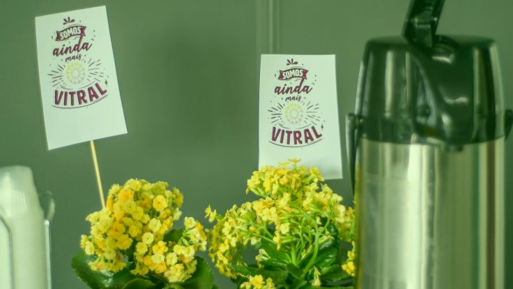

Venha como você está.
Você não precisa estar bem vestido.
Não precisa ter uma idade específica.
Não importa em quem você votou na última eleição.
Por favor, não sinta que precise fingir a respeito de algo.
A VITRAL é uma comunidade que acredita que Deus encontra pessoas que estão longe de serem perfeitas.
Isso significa que todos são bem-vindos, não importa onde estejam em sua jornada espiritual.
Por isso, aprenda no seu próprio ritmo. Faça perguntas. Busque.
Acreditamos que você encontrará o que está procurando. Você aprenderá como relacionar-se com Deus. Poderá viver a experiência da comunidade cristã.
E o melhor — você mudará.
Una-se a nós enquanto buscamos a Deus juntos.
Simplesmente venha como você está!
Tudo o que você queria saber
1. O que é um encontro?
É o nosso culto semanal. Chamamos de encontro porque, ao longo do tempo, muitos criaram uma barreira com o termo "culto". Uma nova linguagem também representa nosso objetivo de organizar encontros que sejam leves, dinâmicos e que não causam constrangimentos em visitantes. Procuramos proporcionar encontros que despertem em quem participa o desejo de convidar e dividir isso com outras pessoas.
2. Quanto tempo dura?
Cerca de 1h30.
3. As crianças também participam?
Sim. É um encontro para adultos e crianças, mas no momento da mensagem elas são ministradas em sua própria linguagem por facilitadores (termo que usamos em lugar de professores). Logo na chegada, todas são identificadas, assim como seus pais, e ao final elas têm um tempo de lanche e brincadeiras enquanto os pais podem também conversar e tomar um café.
4. A igreja "pede dinheiro"?
Sim e Não. "Sim" porque em nossos encontros apresentamos de modo simples e direto nossas necessidades e desafios, e "Não" porque entendemos que estamos "pedindo compromisso e contribuição" para que possamos honrar nossas responsabilidades e avançar em nossos projetos. Por isso semanalmente apresentamos aos membros um relatório financeiro de nossas contribuições. Para saber mais sobre o que pensamos sobre esse assunto, clique aqui.
5. Eu devo permanecer no encontro do início ao fim?
Não há nenhum tipo de controle de entrada ou saída de pessoas. As portas permanecem abertas durante todo o tempo, e sair mais cedo não é motivo de constrangimento.
café, música, informalidade
Um ambiente acolhedor e descontraído para você ficar à vontade e experimentar o nosso jeito de cultuar a Deus. No início e ao final dos encontros, um momento de bate-papo com café também favorece a integração de todos.

Domingos, às 10h.
Relacionamentos de verdade acontecem no dia a dia
A Vitral é uma comunidade que valoriza relacionamentos. Para eles acontecerem de fato, não é no domingo, junto com todas as outras pessoas, que as relações entre as pessoas se aprofundam. É no dia a dia, na construção de amizades e cuidado mútuo que se cria um bom relacionamento.
Os grupos pequenos são uma oportunidade para membros e frequentadores da Vitral se envolverem com a comunidade e desenvolverem amizades. Ali, em um grupo menor, é possível abrir o coração, aprender mais sobre Deus e caminhar rumo à maturidade.
Como funciona
- Encontros semanais, nas casas dos membros do grupo. Dura em torno de 1h30.
- As crianças são ministradas em sua linguagem pelos próprios membros do grupo, em outro local da casa.
- Comer juntos, como por exemplo um bom churrasco, e dividir momentos da nossa vida como nossos aniversários, sempre estão na agenda de um grupo pequeno.
- Se você deseja participar de um grupo pequeno, procure a equipe de recepção, no início ou final dos encontros, e dê o seu nome.